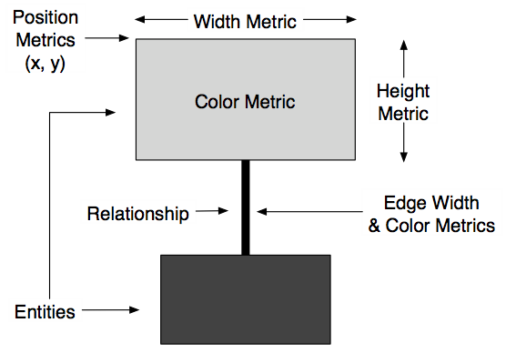
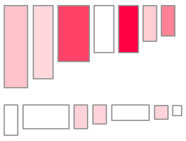

Polymetric maps are software visualizations that employ software
metrics, but without showing any numbers explicitly. The concept of a
polymetric map derives from the notion of a “polymetric view”, a
metrics-enriched visualization of software entities and their
relationships [Lanza03]. The main benefit of a
polymetric view is that it can visually render numbers in a simple yet
highly effective way, which is directly interpretable by the viewer.
Polymetric views use rectangles (also called “nodes”) to display
software entities or abstractions of them, and edges to represent
relationships between the entities. As shown in the figure below,
various metrics can be mapped to the geometrical properties of the
nodes and edges, such as: node width, node height, node color, node
position, edge width and edge color.

A polymetric map is defined by two main components: a base map and a
set of quality perspectives. The base map is a polymetric view that
gives the
general (fixed) layout of the map, and sets the dimensions of the
nodes; it contains no edges and no color information. A base map can
represent an entire system or only parts of the system. The layout is
constructed by using a specialized algorithm or is given by the
intrinsic structure of the software system that is being visualized.
As far as the quality perspectives are concerned, they complete a
polymetric map by
adding color information to nodes. Each perspective consists of a set
of rules that color the nodes based on some of their properties. A
polymetric map can have any number of perspectives as they do not
depend on each other (i.e. at any given moment, the nodes are colored
according to only one perspective).
To better understand the idea behind polymetric maps a parallel can be
made with climate maps. Climate maps are used to show information about
the climate of an area (e.g. temperature, precipitation, wind). In this
case, the basic geographic features correspond to the base view of the
polymetric map. Upon this base view, one can superimpose (like
overlaying transparencies) a number of “skins” containing temperature,
precipitation, or wind information. These superimposed skins correspond
to the quality perspectives of a polymetric map.
Quality perspectives rely on colors and especially color gradients. A
color
gradient is a mechanism for defining a range of position-dependent
colors. A linear color gradient is a transition through a series of
colors along a straight line. It is specified by two points and a color
at each point on the line, calculated using linear interpolation.
Polymetric maps use gradients in quality perspectives to color their
nodes
based on a chosen metric. The process is as follows: (i) for each node
the value of the metric is computed; (ii) the minimum value becomes the
starting point of the gradient and the maximum value the ending point;
(iii) through linear interpolation nodes are assigned a color based on
their metric value. The figure below shows an an example, where a
gradient between white and deep red is used for displaying a metric (in
this case, number of attributes for the class).

In theory any quality perspectives can be combined with any base map,
however,
some of the combinations are not useful, so they are not available in
the tool.
Michele Lanza and Stephane
Ducasse. Polymetric views— a lightweight
visual approach to reverse engineering. IEEE Transactions on Software
Engineering, 29(9):782–795, September 2003.